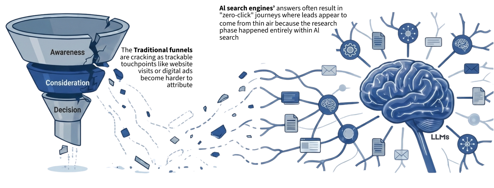

The Funnel Has Gone Invisible
B2B marketers are witnessing a fundamental shift in how buyers discover and engage with content. The familiar marketing funnel—where prospects move from awareness to consideration to decision through trackable touchpoints—seems to be vanishing.
AI-driven search hasn't destroyed the B2B funnel so much as made large parts of it invisible. In this new landscape, success relies on adapting to reputation economics, grappling with zero-click journeys and lost attribution, and building a durable content moat rooted in trust and unique insights.
According to Profound, an AI visibility platform optimising brand presence, nearly 80% of buyers rely on answer engines for at least half of their decision-making process. This leads to an "invisible funnel" where most of the early touchpoints and research steps leave no trace in your web analytics. When the first interaction seen is a demo request or contact form, it might feel like leads are appearing from thin air, the result of an invisible funnel that started and progressed entirely within AI-driven channels.
Buyers emerging from this invisible funnel may already be far down the path to a decision. Bain & Company reports that 85% of B2B buyers ultimately purchase from one of the vendors they had on their radar from the very start of their research. If AI assistants are front-loading that research, buyers might form a "day one list" without ever engaging with broader content or sales outreach. This makes it harder for marketers to insert new brands or influence consideration mid-funnel. If you weren't in that initial AI-fed answer, you might not exist in the buyer's mind at all.

From SEO to Reputation Economics
AI systems don’t present ten blue links; they deliver one synthesised answer drawn from multiple sources. There is no first page of results to dominate. You’re either in the AI’s answer box, or you’re invisible. This paradigm shift is what is called “reputation economics” over traditional SEO tactics. In essence, AI search algorithms curate sources based on trust, semantic authority, and consensus rather than just keyword relevance. A brand’s overall digital reputation, the consistency of its message, the credibility of its content, and the frequency of third-party mentions, becomes the deciding factors in whether the AI will trust and cite it. In Simple words -
| Traditional SEO | Reputation Economics |
|---|---|
| Optimizes for Keywords & Clicks | Optimizes for Trust & Citations |
| Focus on Traffic Volume | Focus on Share of Voice |
| Goal: Rank #1 on Page 1 | Goal: Be Cited in the Answer |
A brand's digital reputation and frequency of third-party mentions are now the deciding factors for AI visibility. The consistency of its message, the credibility of its content, and the frequency of third-party mentions becomes the deciding factor in whether AI will trust and cite it.
AI Looks for Distributed Consensus
If thousands of independent sources describe your company as the best option, the AI internalises that association as truth.
STRATEGY
Building a Durable Content Moat
If AI is going to curate only a few trusted voices on any given topic, you want to be one of those voices. That requires owning a content moat, a body of unique, authoritative content that others cannot easily replicate or replace. High-quality content doesn't just attract prospects; it signals expertise to AI models, making it more likely your insights get included. Create content that offers knowledge only you can provide.

Data & Research
Unique case studies, quarterly reports, and proprietary data analysis that AI must cite as a primary source.
Executive Thought Leadership
Perspectives from your C-suite and co-created content with industry experts. Independent validation strengthens the moat.
Documentation & Tutorials
"How-to" guides produce precise, quotable steps that AI loves to reuse for functional queries.
User Review Aggregators
AI surfaces "what users say" by summarizing common pros and cons. Steady high-quality reviews increase your chances of appearing in AI-generated shortlists.
Editorial Mentions & PR
Earned media is evidence. AI leans on high-trust sources. Strong PR gives AI quotable, verifiable claims about differentiation.
Category Rankings & Influencer Content
List-style rankings on G2/TrustRadius are easy for AI to parse. Influencer content creates additional independent descriptions strengthening the consensus signal.
Strategic Channels for AI Visibility
The convergence of messaging across all these channels increases "entity authority"—the likelihood that a brand is recognised as a legitimate actor in a category.
Thought Leadership & Product Documentation
High-quality research, case studies, and proprietary insights signal expertise to AI systems. Structured documentation and tutorials provide precise, reusable explanations that increase citation likelihood in evaluation and implementation queries.
Editorial Mentions & Expert Commentary
Earned media and expert commentary act as distributed validation layers for AI models. High-trust editorial coverage and quotable insights reinforce differentiation and increase inclusion in “top vendor” and comparison responses.
Reddit & LinkedIn
AI prioritizes these platforms because they represent authentic, practitioner-led conversations. Reddit has become one of the most cited domains on LLMs. LinkedIn captures how practitioners talk about problems in natural language, aligning with how users prompt AI tools.
G2 & TrustRadius
List-style rankings and high review volumes are easily parsed by AI to generate "top vendor" lists and comparison tables. High category placement increases the chances of mentions in AI-generated answers.
Measuring the Invisible
Metrics like website traffic, click-through rates, lead conversions, and attribution models that credit each channel for its role in a sale are either declining or evaporating. Early touchpoints like clicks on a search ad, blog visits, webinar sign-ups, and demo requests are essentially invisible to the company’s tracking tools. Instead of making “traffic from AI” the north-star metric, since traffic may undercount the impact, focus on AI visibility. This means optimising content to appear in AI answers and tracking the share of voice in AI channels. An interesting flip side to fewer clicks is that the clicks you do get from AI-informed buyers tend to be higher quality.
How to Measure Your AI Visibility
If the funnel is invisible, measurement becomes the first challenge. Here are two practical approaches — start scrappy, then scale up.
The funnel is still there! It's just waiting for savvy marketers to shine a light
The B2B marketing funnel isn’t broken. It is evolving into something more complex and less visible. Those marketers who cling to the old playbook of easy clicks and traditional SEO may indeed feel like their funnel has collapsed. Whereas, those who embrace the “invisible” funnel, investing in reputation, rich content, and new measures of success, will find that buyers are still flowing through – even if the path they took to your door doesn’t show up on Google Analytics. In the end, what seems invisible is made visible in the outcomes: higher-intent leads, faster trust-building, and brand preference. The challenge and opportunity of the AI-driven era is to cultivate these outcomes by being the trusted voice that AI amplifies and buyers seek out. The funnel is still there; it’s just waiting for savvy marketers to shine a light.
So What Now? Your AI Visibility Action Plan
A prioritized checklist for B2B marketers adapting to the invisible funnel — from quick wins you can do today to long-term strategic investments.
| # | Action Item | Details | Timeframe | Priority | Effort | Why It Matters |
|---|---|---|---|---|---|---|
| 1 | Audit Your AI Visibility | Query ChatGPT, Perplexity, Gemini & Google AI Overview with your top 5 category questions. Screenshot & log which brands appear. | This Week | Critical | Low | You can't improve what you haven't measured. This 30-min exercise reveals your baseline. |
| 2 | Check Your Review Presence | Audit your G2 and TrustRadius profiles: review count, rating, category rank. Compare against your top 3 competitors. | This Week | Critical | Low | AI parses review platforms to generate shortlists. Fewer than 50 reviews = likely invisible. |
| 3 | Add "How Did You Hear About Us?" Field | Add a self-reported attribution dropdown to demo/contact forms. Include options: ChatGPT, Perplexity, AI assistant, Reddit, LinkedIn, podcast. | This Week | Critical | Low | Captures dark funnel signal immediately. Cheap, fast, and directional. |
| 4 | Update robots.txt for LLM Bots | Ensure your robots.txt does NOT block AI crawlers (GPTBot, Google-Extended, Anthropic, etc.). Add structured data to key pages. | This Week | Critical | Low | If your site blocks LLM bots, you're invisible by default. This is the technical prerequisite for everything else. |
| 5 | Identify One Topic You Can Own | Find the one category question where your company has a unique answer — proprietary data, contrarian POV, or deep expertise. Plan one authoritative piece. | This Month | High | Medium | This is your first content moat brick. AI cites sources that say something no one else does. |
| 6 | Launch a Structured Review Campaign | Build a systematic process to request G2/TrustRadius reviews from satisfied customers (post-onboarding, post-renewal, after support wins). | This Month | High | Medium | Review volume directly correlates with AI inclusion in "best of" and comparison responses. |
| 7 | Publish Executive Thought Leadership | Get your CEO or product leader to publish 1 original POV per month on LinkedIn. Focus on category-level insights, not product pitches. | This Month | High | Medium | Executive voices create the "named entity" association AI uses to build brand-category links. |
| 8 | Add Structured Data & FAQ Schema | Implement JSON-LD structured data (FAQ, HowTo, Organization schema) on your top 10 landing pages and documentation. | This Month | High | Medium | Structured markup helps AI parse and cite your content accurately in synthesized answers. |
| 9 | Build a Monthly AI Citation Tracker | Create a spreadsheet logging brand mentions across AI platforms monthly. Track: query, platform, cited (Y/N), competitors mentioned, sentiment. | This Month | High | Low | Turns a one-time audit into an ongoing measurement system. Shows trends over time. |
| 10 | Pitch 1 Earned Media Story Per Quarter | Target high-trust publications in your category. Focus on data-driven stories or contrarian insights — the kind AI leans on as sources. | This Quarter | Medium | High | Editorial mentions are the strongest "credibility signal" for AI. One major citation compounds. |
| 11 | Create Original Research or Benchmark Report | Develop a proprietary data asset — annual survey, benchmark report, or industry analysis — that becomes a primary citation source. | This Quarter | Medium | High | The ultimate content moat. Competitors can't replicate your data. AI must cite you as the source. |
| 12 | Activate Reddit & Community Presence | Identify 3–5 relevant subreddits or communities. Contribute genuinely useful answers (not promotional). Reddit is among the most-cited domains by LLMs. | This Quarter | Medium | Medium | Reddit threads rank in AI training data and retrieval. Authentic presence here compounds quietly. |
| 13 | Develop a Comprehensive Documentation Hub | Build detailed how-to guides, tutorials, and implementation docs. Use clear step-by-step structure that AI can easily parse and quote. | 6–12 Months | Medium | High | Documentation is the "precision signal" — AI loves structured, reusable explanations for functional queries. |
| 14 | Build an Analyst & Influencer Program | Cultivate relationships with industry analysts and category influencers. Co-create content, offer briefings, support their research. | 6–12 Months | Medium | High | Analyst and influencer mentions create independent "consensus signals" that reinforce your category position. |